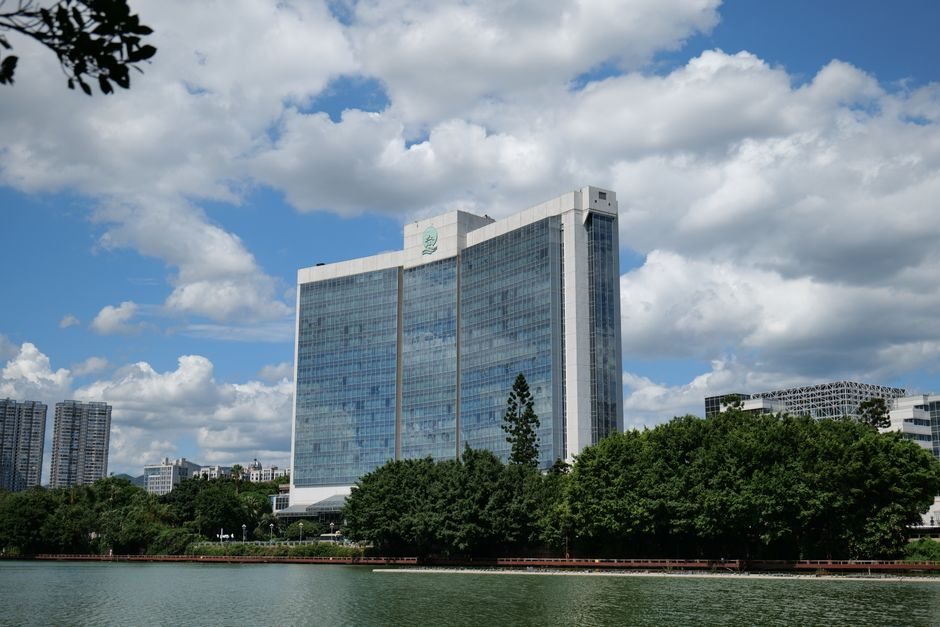

[속보] 2026년 9월 소상공인 정책자금 일반경영안정자금 접수 개시 — 조건·서류·거절 사유 총정리

중소벤처기업부와 소상공인시장진흥공단(소진공)의 2026년 9월분 소상공인 정책자금 직접대출 접수가 시작됐습니다. 그중 일반경영안정자금은 매달 접수가 열리는 가장 대중적인 자금으로, 2026년 정책자금 전체 공급 규모는 4조 4,313억 원으로 역대 최대입니다. "조건이 좋은 건 알겠는데 내가 신청할 수 있는지, 뭘 준비해야 하는지"가 늘 문제이니 이 글에서 그 둘만 정리합니다.
1. 이 자금의 정체 — 30초 요약
| 항목 | 내용 |
|---|---|
| 자금 종류 | 일반경영안정자금 (직접대출 — 소진공이 직접 심사·실행) |
| 한도 | 기업당 7천만 원 이내 (경영안정자금 내에서는 5천만 원이 일반 상한이며, 우대 대상·취약계층은 차등) |
| 금리 | 하반기 기준금리 + 업종·신용·매출 등급별 가산 (변동금리, 반기 갱신) |
| 상환 | 1년 거치 4년 분할 or 5년 분할 — 중도상환수수료는 감면·면제 구간 확인 |
| 용도 | 운영자금 (시설자금은 별도 자금으로 분리) |
| 신청 | 소상공인정책자금 누리집(ols.semas.or.kr) 온라인 + 소진공 지역센터 78곳 방문 |
| 주의 | 선착순 예산 소진형 — 개시 초반에 조기 마감되는 달이 흔합니다 |
핵심은 두 가지입니다. 첫째, 직접대출은 은행 창구가 아니라 소진공이 심사 주체라서 시중 금리보다 낮게 고정되는 구조입니다. 둘째, 예산 소진형이라 "조건 좋은 달"보다 "열린 첫날"이 중요합니다. 접수 시작 알림을 놓친 사람의 1순위 대안이 10월 공고 대기인데, 그 사이 자금이 필요하면 아래 4번(보증부대출 우회)을 봐야 합니다.
2. 오늘 바로 할 일 — 서류 5종
접수 첫날 제출하려면 서류가 준비돼 있어야 합니다. 전부 오늘 온라인 발급 가능합니다.
- 사업자등록증명 — 홈택스, 발급 즉시 인쇄 (최근 1개월 이내 것 요구가 일반적)
- 부가가치세 과세표준증명 — 홈택스. 매출 요건 심사의 근거 서류
- 주민등록등본 — 정부24
- 임대차계약서 사본 — 사업장. 계약자가 본인 명의가 아니면 사용확인서 추가
- 자금사용계획서 — 소진공 양식. "무엇에 얼마"를 금액 단위로 쓰면 심사가 빠릅니다
여기에 전자금융동의서·신용정보조회 동의서가 접수 과정에서 추가되는데, 이건 미리 준비할 필요가 없습니다.
3. 거절 흔한 사유 3가지
- 신용정보 결격 — 연체·부실 기록은 그 자체로 직접대출 탈락 사유가 됩니다. 다만 여기서 끝이 아니라 지역 신용보증재단의 보증부대출로 우회 가능 여부를 검토할 수 있습니다.
- 제한 업종 — 유흥·사치·투기계는 원칙적으로 제외입니다. 다만 "같은 업종이어도 서민 생활 관련 항목은 허용" 같은 공고문 별표 예외가 매년 조금씩 바뀌니, 업종 코드가 애매하면 상담센터(1357)에 코드 확인부터 하세요.
- 매출 규모 불일치 — 매출이 너무 낮으면(사업 개월 수 부족) "사업 영위 지속성"에서, 너무 높으면 소상공인 요건 초과에서 걸립니다. 자금이 원하는 타깃 규모가 자금마다 다르다는 게 핵심입니다.
4. 거절당했을 때의 순서
직접대출 탈락 = 정책자금 전체 탈락이 아닙니다. 거절 사유확인서비스로 사유를 먼저 확인하고, ① 신용 문제 → 지역 신보 보증부대출 ② 서류·절차 문제 → 보완 후 익월 재신청 ③ 정책금융상품 거절 이력 → 119 (소상공인시장진흥공단 통합콜센터) 또는 전문가 상담 순서로 이동하는 것이 실무적으로 빠릅니다. 사유 확인 자체가 이력 관리에 도움이 되니 거절 시 무조건 받아두세요.
5. 이 글의 한계
한도·금리의 세부 수치는 하반기 기준금리 고시와 공고문 개정으로 변경됩니다. 이 글은 구조와 절차 이해를 위한 것이며, 신청 직전에는 반드시 아래 원문 링크에서 해당 월 공고문을 다시 확인하세요. 특히 개시·마감 날짜와 예산 잔량은 매주 바뀝니다.
원문 확인: 소상공인정책자금(ols.semas.or.kr) 공지사항 · 중소기업통합정보(bizinfo) 2026년 소상공인 정책자금 융자사업 공고
같이 읽기: 7문항 자격 자가진단 · 직접대출 vs 보증부대출 갈림길